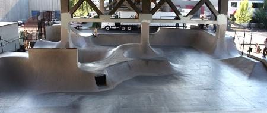

There are many different settings for skateboarding. Some of the common places to skate are on flatground, staircases, ledges, hubbas and even loading docks. These different skateboarding locations are fun and unique in their own rite, but it is illegal in many areas to skateboard. One fool proof place to skate that incorporates all of the settings above without the risk of getting in trouble, is at an actual skateboarding park, also known as, a skatepark.
Skateparks are a realtively common occurence in today's communities, they vary in size, layout, content, and magnitude. There are locally built independent skateparks all the way up to city and even state funded skatepark establishments. Although the people that tend to hang out around the skateparks get a bad wrap, and often times it's well justified, don't let that ruin the great fun that skateboarding at a skatepark can actually provide. Listed below are our top five favorite skateparks.
- Burnside Skate Park (Portland, OR)
- Skate Lab (Atlantic Beach, FL)
- Denver Skate Park (Denver, CO)
- David Armstrong Extreme Park (Louisville, KY)
- Lincoln City Skate Park (Lincoln City, OR)
None of these skateparks close to you? Don't worry, these are just a handful of the thousands of skateparks in the United States. You may find a skatepark closer to you or just skate around out front of your home, the location doesn't matter. Having fun skateboarding is what matters!